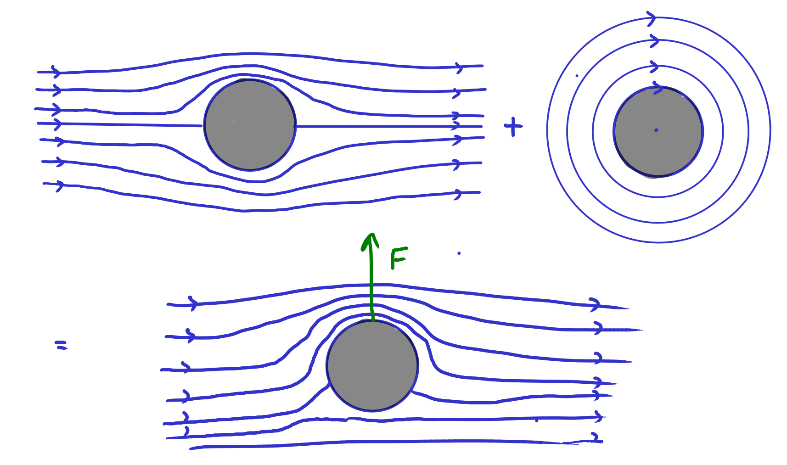

14 Flow around a cylinder, circulation, and the Magnus effect
In this lecture we will explain a fascinating phenomenon: a rotating cylinder flying through air experiences a sideways force perpendicular to the direction of motion. The effect is named after the German physicist Heinrich Gustav Magnus, who first described it in 1852.
The Magnus effect has important applications in sports and engineering. In sports, the effect is used to control the flight of balls, such as in soccer, baseball, and cricket. By spinning the ball, players can create a curved trajectory that is difficult for the opposing team to predict. In engineering, the effect is used to design a range of devices, such as helicopter rotors, wind turbines, and rotating cylinders used in certain industrial processes.
The Magnus effect arises due to the interaction between the spinning object and the surrounding fluid. As the object moves through the fluid, it creates a region of high pressure on one side and a region of low pressure on the other side. The direction of the pressure difference is perpendicular to the direction of motion, and the resulting force causes the object to move sideways.
For us the calculation of the force acting on the rotating cylinder will be a good warm-up for our later task of calculating the lift force acting on an aerofoil. We will meet the concept of circulation, which is the quantity that determines the strength of the lift force.
You find content related to this lecture in the textbooks:
14.1 Flow around a cylinder
We are on the way to describing the flow around an aerofoil. We want the flow to have the following three properties:
The flow is two-dimensional, incompressible and irrotational.
Far away from the aerofoil, the flow should be uniform and straight.
On the surface of the aerofoil, the flow follows the surface.
We will now argue that the flow described by the complex potential \[ w(z)=a\left(z+\frac{R^2}{z}\right) \tag{14.1}\] has these properties, albeit for a cylindrical aerofoil of radius \(R\) centred on the origin, as depicted in the first picture in Figure 14.1. We’ll see in the next lecture how we can deform the cylinder to a more aerofoil-like shape. Let us verify the three properties.
Any flow described by a complex potential is two-dimensional, incompressible and irrotational.
Far away from the origin, \(|z|\ll 1\) and the term in \(w\) that is proportional to \(1/z\) becomes irrelevant and \(w(z)\approx az\). We have already seen in Example 13.4 that this corresponds to a uniform horizontal flow.
The flow is a steady flow, so it follows the streamlines. The streamlines are lines where the stream function is constant
So we need to show that the stream function is constant on the circle of radius \(R\). The stream function is the imaginary part of the complex potential, so we evaluate the complex potential at all points of the form \(z=Re^{i\theta}\): \[\begin{split} w\left( Re^{i\theta}\right)&=a\left(Re^{i\theta}+\frac{R^2}{Re^{i\theta}}\right)\\ &=aR\left(e^{i\theta} +e^{-i\theta}\right)=aR\cos\theta. \end{split} \tag{14.2}\] Thus, on the circle of radius \(R\) the complex potential has no imaginary part, i.e., the stream function is zero there, hence constant.
14.2 Circulation
We now look at a flow around a rotating cylinder, in which the air close to the cylinder is rotating along with it, as depicted in the second flow in Figure 14.1. 1 We start with the complex potential \[ w(z)=i a \log z. \tag{14.3}\] This is holomorphic outside the cylinder.
1 Of course in a perfectly inviscid fluid the cylinder would not be able to drag the fluid along with it due to the absence of shear forces, so we can not describe how this circulating flow is created, but once it is established we can describe it.
We find the velocity field from the derivative \[\begin{split} \frac{dw}{dz} &= \frac{ia}{z}=\frac{ia}{x+iy}=\frac{ia(x-iy)}{x^2+y^2}\\ &=\frac{ay}{x^2+y^2}-i\frac{-ax}{x^2+y^2}. \end{split} \tag{14.4}\] Introducing \(r^2=x^2+y^2\) we read off the velocity components \[ u_x=\frac{a}{r^2}y ~~\text{ and }~~ u_y=-\frac{a}{r^2}x. \tag{14.5}\] This is similar to the circular flow from Example 10.1 just with an extra factor of \(-a/r^2\), so this flow too is a circular flow, but with its angular velocity \(\Omega\) decreasing with increasing distance from the centre, \(\Omega=-a/r\). It is easy to look at this in polar coordinates: we simply need to write \(z=re^{i\theta}\). We then have \[\begin{split} w(z)&=i a \log z=ia\log\left( re^{i\theta}\right)\\ &=ia\left( \log r+i\theta\right)=-a\theta+ia\log r. \end{split} \tag{14.6}\] So the velocity potential is \(\phi=-a\theta\) and the stream function is \(\psi = a\log r\). The streamlines are lines of constant \(\psi\), so lines of constant \(r\), hence circles centred on the origin.
Remember that any flow described by a complex potential is irrotational. Yes, the fluid rotates around the origin, but an extended particle placed in the fluid does not rotate around its own axis. Now, if you do not believe this, in spite of the maths, you can also do the experiment. You can create something close to this flow by filling your bathroom sink and then pulling out the stopper. You will observe that the angular velocity of the water decreases with the distance from the plughole. If you glue together two matches to form a cross and place them on the water, you will see the cross circling the plughole, but without rotating around its own axis. Instead its orientation will stay constant. The vorticity of the flow is zero. To make the situation even more perverse, this flow is called the line vortex flow, in spite of its zero vorticity.
While the line vortex flow is irrotational, it has non-zero circulation.
Definition 14.1 The circulation \(\Gamma\) of a velocity field along a closed curve \(C\) is the line integral of the velocity field along that closed curve, \[ \Gamma = \oint_C \underline{u}\cdot d\underline{x}. \tag{14.7}\]
Thus the circulation is a measure of the net flow of fluid around the curve, and it contains information about the strength and direction of the fluid motion. If as the closed curve we choose the surface of an obstacle to the flow, like the cylinder in our example, we get the circulation around that obstacle. We will see that the lift force experienced by the object is proportional to that circulation.
The circulation is a scalar quantity that can be positive, negative, or zero, depending on the direction and strength of the fluid flow. If the fluid flows around the curve in a clockwise direction, the circulation is negative, and if it flows in a counterclockwise direction, the circulation is positive. If there is no net flow around the curve, the circulation is zero.
According to Stoke’s theorem, \[ \oint_C \underline{u}\cdot d\underline{x}=\int_S(\underline{\nabla}\times\underline{u})\cdot d\boldsymbol{S} , \tag{14.8}\] where \(S\) is a surface enclosed by \(C\). If the flow is irrotational, so that \(\underline{\nabla}\times\underline{u}=\underline{0}\), this seems to indicate that the circulation will always be zero. However this argument only works if the vector field is defined everywhere on the surface \(S\). This will not be the case if the curve \(C\) encircles a line along which the vector field is not defined. This is the case for the line vortex flow, which is undefined along the entire \(z\) axis.
For a two-dimensional flow with a complex potential \(w\), the line integral for the circulation \(\Gamma\) in Eq. 14.7 can be written as a contour integral in the complex plane. To derive this we start with the fact that \(dw/dz=u_x-iu_y\). Hence \[\begin{split} \oint_C\frac{dw}{dz}dz&=\oint_C(u_x-iu_y)(dx+idy)\\ &=\oint_C(u_x\,dx+u_y\,dy)-i\oint_C(u_y\,dx-u_x\,dy) \end{split} \tag{14.9}\] Thus
\[ \Gamma = \oint_C \underline{u}\cdot d\underline{x}=\oint_C(u_x\,dx+u_y\,dy)=\operatorname{Re}\left(\oint_C\frac{dw}{dz}dz\right). \tag{14.10}\]
In the example of the vortex flow with the complex potential \(w=ia\log z\) this gives \[ \Gamma = \operatorname{Re}\left(\oint_C\frac{ia}{z}dz\right)=-2\pi\,a. \tag{14.11}\] The contour integral was easy to perform thanks to Cauchy’s residue theorem. It is nice to see how vector calculus and complex analysis merge to be helpful in fluid dynamics.
14.3 Magnus effect
We now explain the Magnus effect, whereby a spinning cylinder in an air flow will experience a force perpendicular to the airflow. This is similar to the phenomenon of curve balls, except that the flow around the cylinder can be described by a two-dimensional flow unlike the flow around a spinning ball.

The idea is that near the rotating cylinder the air is dragged along, leading to a flow as depicted in Figure 14.1, with a faster flow above the cylinder than below the cylinder. This flow can be obtained by adding a line vertex flow (see Section 14.2) to the flow around the non-rotating cylinder (see Section 14.1. If we add two complex potentials, we again obtain a valid complex potential (because the sum of two holomorphic functions is again holomorphic). So we use the complex potential \[ w(z)=a\left(z+\frac{R^2}{z}\right)+ib\log z. \tag{14.12}\] The stagnation points – the points at which the flow velocity is zero – are where the velocity of the line-vortex flow exactly cancels the velocity of the flow around the non-rotating cylinder. They are moved downwards by the clockwise rotation of the cylinder.
Bernoulli’s theorem for irrotational flow gives us the pressure as \[ p = -\frac{\rho}{2}u^2 + \text{ constant}. \tag{14.13}\] We do not care about the value of the constant because the force is caused only by pressure differences. In order to calculate the force acting on the cylinder we need to calculate the pressure everywhere on the surface of the cylinder, so we need the velocities there. We calculate these by taking the derivative of the complex potential and evaluating it at \(z=Re^{i\theta}\), \[\begin{split} \frac{dw}{dz}&=a\left(1-\frac{R^2}{z^2}\right)+\frac{ib}{z}=a\left(1-e^{-2i\theta}\right)+\frac{ib}{R}e^{-i\theta}\\ &=e^{-i\theta}\left( 2ia\sin(\theta)+\frac{ib}{R}\right). \end{split} \tag{14.14}\] From this we get the square of the velocity as \[\begin{split} u^2&=u_x^2+u_y^2=(u_x-iu_y)(u_x+iu_y)=\left|\frac{dw}{dz}\right|^2\\ &=\left(2a\sin\theta-\frac{b}{R}\right)^2 \end{split} \tag{14.15}\] and thus the pressure at the surface of the cylinder is \[ p(\theta)=-2\rho\left(a^2\sin^2\theta-a\frac{b}{R}\sin\theta\right) +\text{ constant}. \tag{14.16}\] This now allows us to calculate the force \(dF\) on an infinitesimal angular segment of the cylinder between \(\theta\) and \(\theta+d\theta\). The force is constant along the length of the cylinder, so we calculate just the force per unit length. According to the definition of the pressure this force is \[ d\underline{F}(\theta) = -p(\theta)\,\underline{n}\, dl = -p(\theta)\,\underline{n} R\,d\theta. \tag{14.17}\] where \(\underline{n}\) is the outwards normal. We are interested in the \(y\) component of this: \[ dF_y(\theta) = -p(\theta)\,R\sin\theta \,d\theta. \tag{14.18}\] Integrating this over the entire circle of radius \(R\) gives \[\begin{split} F_y&=-\int_0^{2\pi}p(\theta)\,R\sin\theta\,d\theta\\ &=\int_0^{2\pi}2\rho\left(a^2\sin^3\theta-a\frac{b}{R}\sin^2\theta\right)R\,d\theta\\ &=2\pi\rho\, a\, b. \end{split} \tag{14.19}\] So we have derived that the cylinder experiences a non-zero lift force that is proportional to the air density, the velocity of the air flow, and the angular velocity of the cylinder.
I encourage you to also calculate the \(x\) component of the force and to discuss the result.
14.4 A comment on units and dimensions
When describing the real world, quantities have units and dimensions. For example, the radius of a cylinder has dimension of length and can be measured in either meters or feet or centimetres or … There are three ways to deal with this:
Agree on a system of units and measure everything in terms of these units. The most common system is the SI system, where length is measured in meters (m), time - in seconds (s), mass - in kilograms (kg). So we would write \[ \text{radius }=R \text{ meters} \] and then work with \(R\) in our formulas. This seems natural to a mathematician because it means that the mathematician never has to think about units and dimensions because there is an agreed way to express all quantities as just numbers. But one looses some benefits.
Choose units that are natural for the problem at hand. For example if the radius of the cylinder is the most important length in the problem, then it is natural to measure all other lengths as multiples of this radius. This has the nice effect that \[ \text{radius } =1 \text{ radius}. \] None of the formulas will ever have to involve a parameter \(R\). By similarly choosing a natural time and a natural mass, we can get rid of 3 parameters. This is why applied mathematicians sometimes like this approach because it leads to simpler expressions. It goes by the name of “non-dimensionalisation”. Theoretical physicists use it to set \(c=\hbar=G=1\).
Don’t specify units and keep all quantities as dimensionful quantities. So \[ \text{radius }=R. \] This has the disadvantage over the previous approach that it does not reduce the number of parameters. But it has the advantage that we have an easy way to check whether the equations we derive make sense. If in any equation the different terms do not all have the same dimension, then we know we have made a mistake. For people like me who make mistakes very easily, this is very valuable.
It is clear that the first approach above has no advantages, because it neither decreases the number of parameters in the equations nor gives us a way to use the dimensions of the terms in the equation as a check. Nevertheless, unfortunately, it is often adopted by mathematicians and we did so in this lecture. Take a look for example in Eq. 14.12 : \[ w(z)=a\left(z+\frac{R^2}{z}\right)+ib\log z. \] The fact that it contains \(\log z\) shows that \(z\) is dimensionless (because you can’t take the log of a dimensionful number). Thus we did not take approach 3. The fact that it still contains \(R\) means that we did not take approach 2, i.e., \(z\) is not measured in multiples of \(R\).
We will switch to using approach 3 for the rest of the module to always have a check on the results.